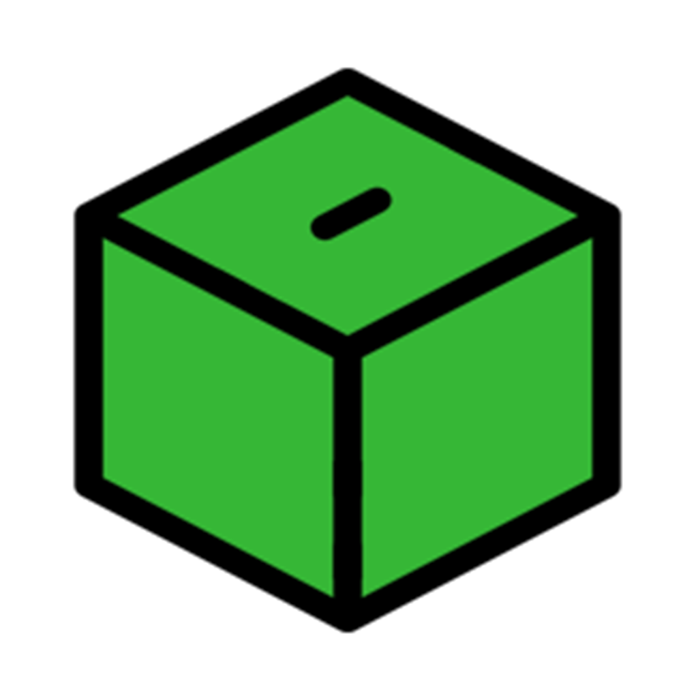

Join Us
iLand is a mission-driven project focused on secure digital identity, verified participation, and tools that can help people express their voice more safely and credibly. We want to build technology that helps communities move closer to meaningful, trustworthy participation.
We are looking for thoughtful people who care about freedom, trust, privacy, civic participation, and practical technology. You do not need to fit a single mold. If you believe technology can help people participate more directly in shaping their future, we would love to hear from you.
We believe direct democracy needs more than ideals. It needs secure, accessible, privacy-respecting tools that real people can trust.
Who We’d Love to Hear From
Engineers
Mobile, backend, security, cryptography, embedded, identity systems, networking, and infrastructure.
Designers
Product designers, UX thinkers, and visual designers who can make complex trust flows clear and human.
Researchers
People interested in digital identity, governance, privacy, security, voting systems, and public-interest technology.
Writers & Communicators
People who can help explain the mission clearly, build community, and communicate responsibly across cultures and languages.
Community Builders
Organizers, advocates, and collaborators who want to help shape the project and connect it to real human needs.
Supporters
Even if you are not technical, you can contribute through ideas, testing, introductions, feedback, and strategic support.
What We Care About
- Privacy and security by design
- User dignity and trust
- Verified participation without unnecessary surveillance
- Technology that serves people, not power
- Practical, transparent, long-term thinking
How You Can Get Involved
- Contribute technically to app and platform development
- Help improve identity, onboarding, and participation flows
- Review ideas, architecture, and security assumptions
- Test features and provide product feedback
- Collaborate on strategy, partnerships, and community growth
Join the Project
If this mission speaks to you, send us a short message about who you are, how you would like to contribute, and any relevant background, portfolio, GitHub, or project links.